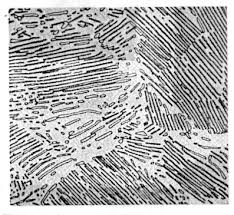
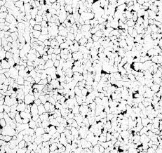
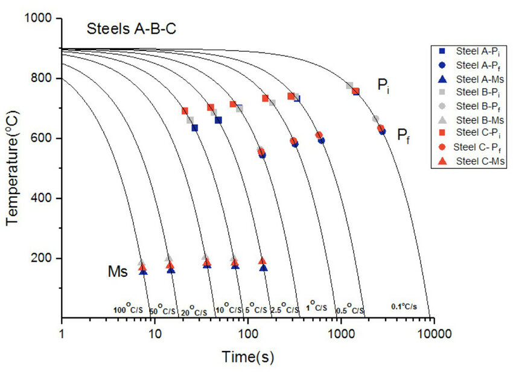
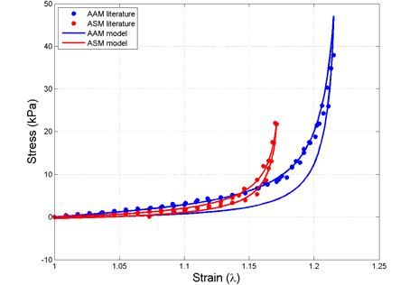
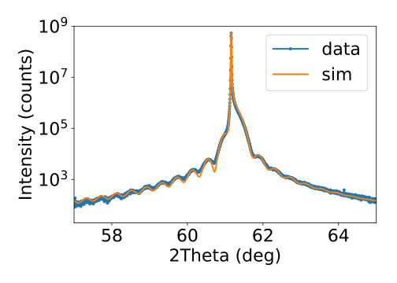
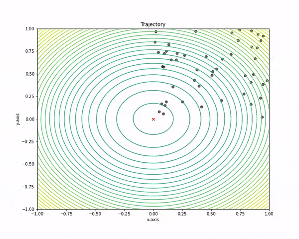

Capturas varias
Se exponen a continuación algunas imágenes relacionadas con el tema de investigación de la tesis.







En la tesis a realizar se busca el implementar lo que es conocido como un gemelo digital de proceso (GDP). Un GDP consiste en una representación virtual detallada de un proceso de fabricación metalúrgica. Este modelo digital simula y analiza en tiempo real el comportamiento del proceso físico, permitiendo optimizar la producción, prever fallos, mejorar la calidad del producto y reducir costos operativos. Utiliza datos recogidos de sensores y sistemas de control para reflejar con precisión las condiciones y rendimiento del proceso en el mundo real.
Principalmente la tesis consta de las siguientes partes:
Experimental
Realizar ensayos mecánicos con el objetivo de recoger los datos experimentales para alimentar los modelos.
Programación
Implementar métodos numéricos y modelos matemáticos aptos con el fin de simular el comportamiento observado.
Análisis y contrastación
Evaluar la bondad de los resultados simulados frente a los experimentales.
La carga de trabajo cae principalmente en la parte de simulaciones y desarrollo de los modelos que conformarán el gemelo digital.
De igual forma la parte concerniente a análisis y contrastación tendrá también un peso significativo..
Experimental
Programación
Análisis y contrastación>
Se exponen a continuación algunas imágenes relacionadas con el tema de investigación de la tesis.
Se facilitan algunos medios en caso de requerir de contacto:
20018 Donostia-San Sebastian, Gipuzkoa, ES
Phone: +34 641986786
Email: sfernandezs@unav.es
serfersan
@MatesSergio